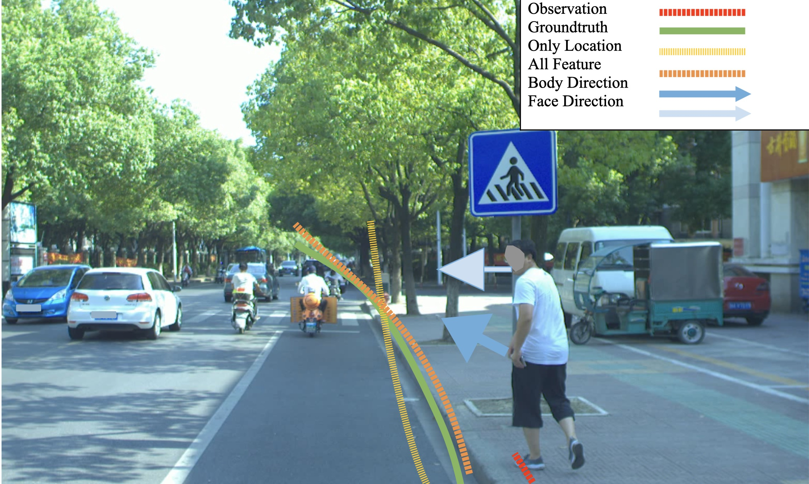

孙鹏
Contact:
sunpeng1996 AT zju.edu.cn
About Me
Currently, I am a Computer Vision Algorithm Engineer at Data-ecom, ByteDacne. I got my Master degree at ZheJiang University in Mar, 2021, under the supervision of Prof. XiLi. Before that, I received my B.E degree in 2018 from Department of Computer Science and Technology of Harbin Institute of Technology (HIT), Harbin, China.
My research interests lie in Image/Video Understanding, Neural Architecture Search, Multimodal Understanding, Generative Adversarial Network and so on.
Education

Sep. 2018 - Mar. 2021 , Department of Computer Science and Technology, Zhejiang University,
Master of Science, Provincial Outstanding Graduates.

Sep. 2014 - Jun. 2018 , Software Engineering, Harbin Institute of Technology,
Bachelor of Engineering, Outstanding Graduates.
News
One paper has been accepted by CVPR'2021 (Oral Presention)!
One paper has been accepted by IJCV'2021!
One paper has been accepted by CVPR'2020!
Publications
Peng Sun, Wenhu Zhang, Xi Li.
International Journal of Computer Vision (IJCV), 2022.
Peng Sun, Wenhu Zhang, Huanyu Wang, Songyuan Li, Xi Li.
IEEE Conference on Computer Vision and Pattern Recognition (CVPR Oral), 2021.
Peng Sun, Jiaxiang Wu, Songyuan Li, Peiwen Lin, Junzhou Huang, Xi Li.
International Journal of Computer Vision (IJCV), 2021.
Peiwen Lin*, Peng Sun*, Guangliang Cheng, Sirui Xie, Xi Li, Jianping Shi.
IEEE Conference on Computer Vision and Pattern Recognition (CVPR), 2020. * means equal contribution
Xuying Yang, Peng Sun, Feng Zhang, Zhenhong Du, Renyi Liu.
Remote Sensing, 2021.
Peng Sun*, Peiwen Lin*, Guangliang Cheng, Jianping Shi, Jiawan Zhang, Xi Li.
Arxiv, Preprint
Work Experience
Algorithm Engineer
2022.05 --- 至今
- Hard Working
Algorithm Engineer
2021.03 --- 2022.05
- 主要研究方向:人脸属性编辑、GAN 手机端模型加速;
- 自研提出基于StyleSpace的细粒度人脸属性编辑方案,并成功落地;
- 主R海外GAN手机端模型加速工作, 依托海外实时变老魔表, 并取得S级业务收益;
- 主R春节幸运虎牙魔表, 独立完成服务端/移动端模型上线, 取得快手SS级爆款和快闪S级爆款;
- 作为主S完成移动端性别变换项目, 负责高端机模型效果, 情人节上线取得快手A级爆款。
Internship Experience
Intern, 机器智能实验室, 达摩院
2020.05 --- 2020.07
- 进行Object Detection和Instance Segmentation的算法研究工作.
- 进行图像实例分割的算法研究工作，复现并改进主流 Two-Stage 检测与分割算法.
Research Intern, 机器学习中心.
Supervisor: Dr. Jiaxiang Wu
2019.07 --- 2019.11
- 主要研究方向:神经网络搜索与实时语义分割，并于 IJCV-2021 发表一篇论文.
- 首次提出能联合搜索实时语义分割网络 Building Block、网络深度与下采样策略、特征聚集方式的 NAS 框架，在 Cityscapes 数据集上刷新了当时业内最高的实时精度.

Research Intern, Segmentation Group
2017.10 --- 2019.04
- 进行车道线检测、车辆可行驶区域检测和车道线属性判别的算法研究工作，模型联合训练(joint training)，算法为宇通、本田自动驾驶及辅助驾驶提供。
- 实时语义分割、视频分割、检测算法研究工作。

Intern, 策略研发工程师，百度多模交互搜索部
2017年7月 --- 2017年10月
- 作为主要负责人研发手机百度端人脸猜词策略,利用Tensorflow提取人脸特征,GPU大规模聚簇并构建大规模检索库部署RPC服务 ,完成人脸猜词上线,召回绝对提升2个百分点。

Intern, 技术研发中心研发九部
2016年7月 --- 2016年9月
- Scala and Java Server.
Other Ancient Project Experience

{kind=link}
Pedestrian trajectory prediction.
2018.09 - 2019.03, SenseTime, Hangzhou
Pedestrian trajectory prediction in automatic driving, release open source data set, design robust trajectory prediction algorithm, etc.

Lane Line & FreeSpace & Lane line attribute detection for auto-driving.
2017.10 - 2018.09, SenseTime, Beijing
Research on the algorithm of lane line detection, vehicle-accessible area detection and lane line attribute discrimination & multi-task joint learning. The algorithm is provided for YuTong and Honda for automatic driving.
Research on video detection and segmentation algorithm.

Face recognition on Mobile Baidu.
2017.07 - 2017.10, Baidu, Beijing
As the main person in charge of the research and development of mobile phone baidu, face guessing word strategy, using Tensorflow to extract face features, large-scale clustering on GPU and build large-scale retrieval library to deploy RPC service, complete the online face guessing word, and the absolute recall increase by 2 percentage points.

Eyelife-Amblyopia group life partner.
2016.05 - 2016.11, HIT ,Harbin
Eyelife is a wearable device for amblyopia group. Combined with the popular machine learning and deep learning technologies, it provides intelligent voice interactive chat, text recognition, scene recognition and other functions for amblyopia group. The combination of semantic rules makes it a companion device with humanistic care rather than a cold machine.
Other projects:
Patents (First Author)
- CN112651406A, 一种深度感知和多模态自动融合的 RGB-D 显著性目标检测方法.
- CN110837811A, 语义分割网络结构的生成方法、装置、设备及存储介质.
- CN109978891A, 图像处理方法及装置、电子设备和存储介质.
- CN111209777A, 车道线检测方法、装置、电子设备及可读存储介质.
- CN111209780A, 车道线属性检测方法、装置、电子设备及可读存储介质.
- CN111209779A, 可行驶区域检测及智能驾驶控制方法、装置和系统.
- CN111222522A, 神经网络训练、路面检测、智能驾驶控制方法和装置.
Honors and Awards
- The first place in Lane Line Detection competition of Nanjing Artificial Intelligence Application Competition, 2018.
- The Runner up of ECCV 2018 workshop Scene Understanding Challenge for Autonomous Navigation in Unstructured Environments
- No. 5 of ECCV 2018 workshop The 1st Large-scale Video Object Segmentation Challenge
- 浙江省优秀毕业生、浙江大学优秀毕业生, 2021.03
- 浙江大学校级三好研究生、优秀研究生, 2020.11
- 入选2019年腾讯犀牛鸟精英人才培养计划, 2019.04
- Outstanding intern of sensetime, 2018.04
- Outstanding graduate of Harbin Institute of Technology, 2018.04
- The champion of the 9th Intel Cup National College Students Software Innovation Competition. 2016.11
- Sensetime Scholarship, 2017.11
- 2016上海交通大学黑客马拉松-华为企业奖 2016.09
- 2016蓝桥杯团队赛全国三等奖, 团队赛黑龙江省一等奖 2016.04
- 2016北京大学黑客马拉松-IBM企业奖 2016.03
- 2016年度软件学院单项奖学金 2015.12
Academic Service
- Reviewer: TPAMI、TIP、TNNLS、Neurocomputing、NEPL
Skills
- Programing Languages: Python Scala Java
- Frameworks: Caffe Tensorflow Pytorch
unique vistors since March 26th, 2018.